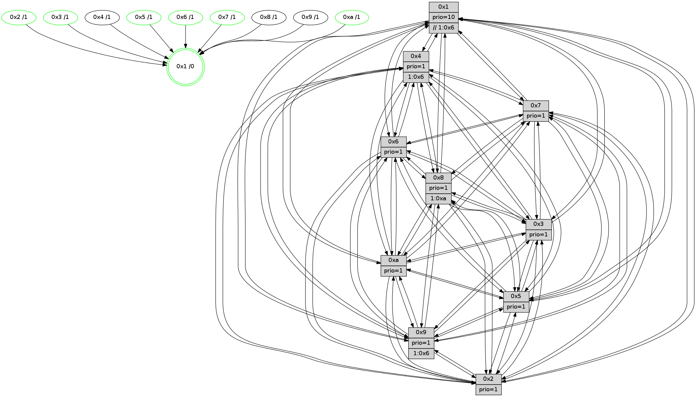

>> << IDX [start] -100 -25 -5 +0 +5 +25 +100 [1140.06597495]
 Previous packets
----------------------------------------------------------------------
1135.337196 beacon01(faad) #0 coord=01,02,03,04,05,06,07,0a,09,08 cycle=688.0ms assoc
-- color-indic=1 64 23 3d
1135.347178 beacon02(faad) #0 coord=01,02,03,04,05,06,07,0a,09,08 cycle=688.0ms assoc 64 b0 0c
1135.357179 beacon03(faad) #0 coord=01,02,03,04,05,06,07,0a,09,08 cycle=688.0ms assoc 64 ca 41
1135.367179 beacon04(faad) #0 coord=01,02,03,04,05,06,07,0a,09,08 cycle=688.0ms assoc 64 bd ab
1135.377179 beacon05(faad) #0 coord=01,02,03,04,05,06,07,0a,09,08 cycle=688.0ms assoc 64 c7 e6
1135.387180 beacon06(faad) #0 coord=01,02,03,04,05,06,07,0a,09,08 cycle=688.0ms assoc 64 49 31
1135.397179 beacon07(faad) #0 coord=01,02,03,04,05,06,07,0a,09,08 cycle=688.0ms assoc 64 33 7c
1135.407185 beacon0a(faad) #0 coord=01,02,03,04,05,06,07,0a,09,08 cycle=688.0ms assoc 64 42 77
1135.417183 beacon09(faad) #0 coord=01,02,03,04,05,06,07,0a,09,08 cycle=688.0ms assoc 64 cc a0
1135.427185 beacon08(faad) #0 coord=01,02,03,04,05,06,07,0a,09,08 cycle=688.0ms assoc 64 b6 ed
1135.438416 [Hello(1): seq=634 sym=4,2,9,5,10,3,8,6,7 sysInfo=coloring-mode-on,ColoringModeRequestCalled stat=4:14,11,15,4/2:9,9,0,1/9:10,2,15,7/5:9,10,9,7/10:2,0,5,5/3:9,8,9,6/8:9,8,12,2/6:8,12,2,13/7:12,5,13,14]
1135.441731 [Hello(5): seq=725 sym=7,6,4,3,1,9,8,10,2 sysInfo=hasWarning stat=7:6,15,5,13/6:4,1,6,2/4:5,12,13,12/3:4,13,11,13/1:4,10,12,1/9:9,0,14,9/8:3,7,9,1/10:12,13,12,7/2:2,1,14,5]
1135.444569 [Hello(2): seq=721 sym=4,5,7,6,3,9,8,10,1 sysInfo=hasWarning stat=4:14,11,2,10/5:4,5,9,0/7:7,15,3,14/6:15,2,11,11/3:7,0,10,8/9:10,8,11,6/8:6,11,3,10/10:3,13,0,10/1:4,10,4,0]
1135.449706 [Hello(3): seq=725 sym=1,7,2,4,8,9,10,5 sysInfo=hasWarning stat=1:9,0,6,0/7:6,2,10,12/2:3,12,12,1/4:4,9,13,11/8:3,6,6,3/9:4,8,15,13/10:9,13,11,3/5:12,9,4,15]
1135.452727 [Color(3) seq=354 @0:0 prio=1]
1135.458815 [Color(10) seq=314 @0:0 prio=1 >1.@8]
1135.465464 [Hello(6): seq=725 sym=2,3,5,4,7,9,8,10,1 sysInfo=hasWarning stat=2:8,11,0,7/3:6,12,12,11/5:8,9,13,1/4:4,2,7,5/7:4,1,2,12/9:10,0,1,7/8:6,13,11,4/10:15,11,3,12/1:1,4,10,1]
1135.470224 [Color(6) seq=357 @0:0 prio=1]
----------------------------------------------------------------------
1136.125326 beacon01(faad) #0 coord=01,02,03,04,05,06,07,0a,09,08 cycle=688.0ms assoc
-- color-indic=1 64 9f 38
1136.135309 beacon02(faad) #0 coord=01,02,03,04,05,06,07,0a,09,08 cycle=688.0ms assoc 64 0c 09
1136.145308 beacon03(faad) #0 coord=01,02,03,04,05,06,07,0a,09,08 cycle=688.0ms assoc 64 76 44
1136.155310 beacon04(faad) #0 coord=01,02,03,04,05,06,07,0a,09,08 cycle=688.0ms assoc 64 01 ae
1136.165309 beacon05(faad) #0 coord=01,02,03,04,05,06,07,0a,09,08 cycle=688.0ms assoc 64 7b e3
1136.175309 beacon06(faad) #0 coord=01,02,03,04,05,06,07,0a,09,08 cycle=688.0ms assoc 64 f5 34
1136.185310 beacon07(faad) #0 coord=01,02,03,04,05,06,07,0a,09,08 cycle=688.0ms assoc 64 8f 79
1136.195314 beacon0a(faad) #0 coord=01,02,03,04,05,06,07,0a,09,08 cycle=688.0ms assoc 64 fe 72
1136.205314 beacon09(faad) #0 coord=01,02,03,04,05,06,07,0a,09,08 cycle=688.0ms assoc 64 70 a5
1136.215314 beacon08(faad) #0 coord=01,02,03,04,05,06,07,0a,09,08 cycle=688.0ms assoc 64 0a e8
1136.229415 [Color(5) seq=319 @0:0 prio=1]
1136.230817 [Hello(10): seq=658 sym=6,2,3,8,7,5,9,4,1 sysInfo=hasWarning stat=6:6,2,0,6/2:6,12,2,10/3:5,9,5,11/8:12,12,7,1/7:6,8,15,6/5:0,12,12,14/9:0,15,0,2/4:4,0,0,0/1:10,11,3,1]
1136.234517 [STC(1) #0.173 tree-change,inconsistent-stability,stable,to-color d=0]
1136.237102 [Color(1) seq=406 @0:0 prio=10 >>1.@6,1.@7,1.@8]
1136.239783 [Hello(7): seq=725 sym=2,3,5,6,4,8,9,10,1 sysInfo=hasWarning stat=2:9,12,6,0/3:12,2,5,15/5:2,0,3,1/6:10,6,3,9/4:14,13,4,1/8:5,5,11,1/9:2,1,7,1/10:10,9,8,4/1:13,5,9,0]
1136.244214 [Color(7) seq=271 @0:0 prio=1]
----------------------------------------------------------------------
1136.913456 beacon01(faad) #0 coord=01,02,03,04,05,06,07,0a,09,08 cycle=688.0ms assoc
-- color-indic=1 64 ab 20
1136.923438 beacon02(faad) #0 coord=01,02,03,04,05,06,07,0a,09,08 cycle=688.0ms assoc 64 38 11
1136.933438 beacon03(faad) #0 coord=01,02,03,04,05,06,07,0a,09,08 cycle=688.0ms assoc 64 42 5c
1136.943439 beacon04(faad) #0 coord=01,02,03,04,05,06,07,0a,09,08 cycle=688.0ms assoc 64 35 b6
1136.953439 beacon05(faad) #0 coord=01,02,03,04,05,06,07,0a,09,08 cycle=688.0ms assoc 64 4f fb
1136.963439 beacon06(faad) #0 coord=01,02,03,04,05,06,07,0a,09,08 cycle=688.0ms assoc 64 c1 2c
1136.973439 beacon07(faad) #0 coord=01,02,03,04,05,06,07,0a,09,08 cycle=688.0ms assoc 64 bb 61
1136.983444 beacon0a(faad) #0 coord=01,02,03,04,05,06,07,0a,09,08 cycle=688.0ms assoc 64 ca 6a
1136.993444 beacon09(faad) #0 coord=01,02,03,04,05,06,07,0a,09,08 cycle=688.0ms assoc 64 44 bd
1137.003444 beacon08(faad) #0 coord=01,02,03,04,05,06,07,0a,09,08 cycle=688.0ms assoc 64 3e f0
1137.017062 [Hello(1): seq=635 sym=4,2,9,5,10,3,8,6,7 sysInfo=coloring-mode-on,ColoringModeRequestCalled stat=4:14,11,15,4/2:10,9,0,1/9:10,2,15,7/5:10,11,9,7/10:2,1,5,5/3:10,9,9,6/8:9,8,12,2/6:9,13,2,13/7:13,6,13,14]
1137.019499 [Hello(5): seq=726 sym=7,6,4,3,1,9,8,10,2 sysInfo=hasWarning stat=7:7,0,5,13/6:5,2,6,2/4:5,12,13,12/3:5,14,11,13/1:4,11,13,1/9:9,0,14,9/8:3,7,9,1/10:13,14,12,7/2:3,1,14,5]
1137.022030 [Hello(6): seq=726 sym=2,3,5,4,7,9,8,10,1 sysInfo=hasWarning stat=2:8,11,0,7/3:6,12,12,11/5:9,10,13,1/4:4,2,7,5/7:5,2,2,12/9:10,0,1,7/8:7,13,11,4/10:0,11,3,12/1:2,5,11,1]
1137.024721 [STC(10)->1 #0.173 tree-change,inconsistent-stability,stable,to-color d=1]
1137.026917 [STC(5)->1 #0.173 tree-change,inconsistent-stability,stable,to-color d=1]
1137.028196 [Hello(3): seq=726 sym=1,7,6,2,4,8,9,10,5 sysInfo=hasWarning stat=1:10,1,7,0/7:7,3,10,12/6:0,1,0,0/2:3,12,12,1/4:4,9,13,11/8:4,6,6,3/9:4,8,15,13/10:10,14,11,3/5:13,10,4,15]
1137.031110 [Hello(2): seq=722 sym=4,5,7,6,3,9,8,10,1 sysInfo=hasWarning stat=4:14,11,2,10/5:4,6,9,0/7:8,0,3,14/6:0,3,11,11/3:8,1,10,8/9:10,8,11,6/8:6,11,3,10/10:4,14,0,10/1:4,11,5,0]
1137.035616 [STC(3)->1 #0.173 tree-change,inconsistent-stability,stable,to-color d=1]
1137.037604 [STC(2)->1 #0.173 tree-change,inconsistent-stability,stable,to-color d=1]
1137.039506 [Color(3) seq=355 @0:0 prio=1]
1137.041685 [STC(9)->1 #0.173 tree-change,inconsistent-stability,to-color d=1]
1137.043100 [TreeStatus(10)-.->1 #0.173 tree-change,inconsistent-stability,stable child=1]
1137.044833 [TreeStatus(2)-.->1 #0.173 tree-change,inconsistent-stability,stable child=1]
1137.046204 [Color(10) seq=315 @0:0 prio=1]
1137.050175 [STC(6)->1 #0.173 tree-change,inconsistent-stability,stable,to-color d=1]
1137.052753 [Color(6) seq=358 @0:0 prio=1]
----------------------------------------------------------------------
1137.701585 beacon01(faad) #0 coord=01,02,03,04,05,06,07,0a,09,08 cycle=688.0ms assoc
-- color-indic=1 64 17 25
1137.711569 beacon02(faad) #0 coord=01,02,03,04,05,06,07,0a,09,08 cycle=688.0ms assoc 64 84 14
1137.721568 beacon03(faad) #0 coord=01,02,03,04,05,06,07,0a,09,08 cycle=688.0ms assoc 64 fe 59
1137.731569 beacon04(faad) #0 coord=01,02,03,04,05,06,07,0a,09,08 cycle=688.0ms assoc 64 89 b3
1137.741567 beacon05(faad) #0 coord=01,02,03,04,05,06,07,0a,09,08 cycle=688.0ms assoc 64 f3 fe
1137.751568 beacon06(faad) #0 coord=01,02,03,04,05,06,07,0a,09,08 cycle=688.0ms assoc 64 7d 29
1137.761568 beacon07(faad) #0 coord=01,02,03,04,05,06,07,0a,09,08 cycle=688.0ms assoc 64 07 64
1137.771573 beacon0a(faad) #0 coord=01,02,03,04,05,06,07,0a,09,08 cycle=688.0ms assoc 64 76 6f
1137.781572 beacon09(faad) #0 coord=01,02,03,04,05,06,07,0a,09,08 cycle=688.0ms assoc 64 f8 b8
1137.791575 beacon08(faad) #0 coord=01,02,03,04,05,06,07,0a,09,08 cycle=688.0ms assoc 64 82 f5
1137.802791 [Hello(10): seq=659 sym=6,2,3,8,7,5,9,4,1 sysInfo=hasWarning stat=6:6,3,1,6/2:6,12,2,10/3:5,9,5,11/8:12,12,8,1/7:7,9,15,6/5:0,12,12,14/9:0,15,0,2/4:4,0,0,0/1:11,12,4,1]
1137.806409 [Hello(8): seq=670 sym=5,2,3,4,9,6,7,10,1 sysInfo=hasWarning stat=5:9,7,3,0/2:3,2,15,10/3:12,7,3,15/4:7,15,6,10/9:8,7,5,3/6:10,4,1,13/7:2,2,0,0/10:9,12,8,4/1:14,4,9,0]
1137.809281 [Hello(7): seq=726 sym=2,3,5,6,4,8,9,10,1 sysInfo=hasWarning stat=2:10,12,7,1/3:13,3,6,15/5:2,1,4,1/6:11,7,4,9/4:14,13,4,1/8:6,5,12,1/9:2,1,8,1/10:10,10,9,5/1:14,5,9,0]
1137.812882 [Hello(4): seq=726 sym=5,7,6,2,3,9,8,10,1 sysInfo= stat=5:15,14,14,15/7:4,2,1,1/6:3,1,15,12/2:4,5,8,14/3:15,13,15,11/9:8,13,4,11/8:9,0,15,5/10:9,11,8,13/1:6,11,10,1]
1137.815397 [Color(1) seq=407 @0:0 prio=10 >>1.@6,1.@7,1.@8]
1137.819099 [Color(7) seq=272 @0:0 prio=1]
1137.824042 [Color(5) seq=320 @0:0 prio=1]
----------------------------------------------------------------------
1138.489715 beacon01(faad) #0 coord=01,02,03,04,05,06,07,0a,09,08 cycle=688.0ms assoc
-- color-indic=1 64 d3 2b
1138.499697 beacon02(faad) #0 coord=01,02,03,04,05,06,07,0a,09,08 cycle=688.0ms assoc 64 40 1a
1138.509696 beacon03(faad) #0 coord=01,02,03,04,05,06,07,0a,09,08 cycle=688.0ms assoc 64 3a 57
1138.519696 beacon04(faad) #0 coord=01,02,03,04,05,06,07,0a,09,08 cycle=688.0ms assoc 64 4d bd
1138.529698 beacon05(faad) #0 coord=01,02,03,04,05,06,07,0a,09,08 cycle=688.0ms assoc 64 37 f0
1138.539698 beacon06(faad) #0 coord=01,02,03,04,05,06,07,0a,09,08 cycle=688.0ms assoc 64 b9 27
1138.549698 beacon07(faad) #0 coord=01,02,03,04,05,06,07,0a,09,08 cycle=688.0ms assoc 64 c3 6a
1138.559703 beacon0a(faad) #0 coord=01,02,03,04,05,06,07,0a,09,08 cycle=688.0ms assoc 64 b2 61
1138.569701 beacon09(faad) #0 coord=01,02,03,04,05,06,07,0a,09,08 cycle=688.0ms assoc 64 3c b6
1138.579704 beacon08(faad) #0 coord=01,02,03,04,05,06,07,0a,09,08 cycle=688.0ms assoc 64 46 fb
1138.590918 [Hello(5): seq=727 sym=7,6,4,3,1,9,8,10,2 sysInfo=hasWarning stat=7:7,0,5,13/6:5,3,7,2/4:5,12,13,12/3:6,15,12,13/1:4,11,13,1/9:9,0,15,9/8:3,7,9,1/10:14,15,12,8/2:4,1,15,6]
1138.594511 [Color(10) seq=316 @0:0 prio=1]
1138.596431 [Hello(2): seq=723 sym=4,5,7,6,3,9,8,10,1 sysInfo=hasWarning stat=4:15,11,2,10/5:4,7,9,0/7:9,1,3,14/6:0,4,12,11/3:8,1,10,8/9:10,8,11,6/8:7,11,3,10/10:5,15,0,10/1:4,12,5,0]
1138.599936 [Hello(6): seq=727 sym=2,3,5,4,7,9,8,10,1 sysInfo=hasWarning stat=2:8,11,0,7/3:6,12,12,11/5:9,11,13,1/4:5,2,7,5/7:6,3,2,12/9:10,0,1,7/8:8,13,12,4/10:1,11,3,12/1:3,6,11,1]
1138.603404 [Color(6) seq=359 @0:0 prio=1]
1138.605656 [Hello(1): seq=636 sym=4,2,9,5,10,3,8,6,7 sysInfo=coloring-mode-on,ColoringModeRequestCalled stat=4:14,11,15,4/2:11,9,1,2/9:10,2,0,7/5:11,12,10,7/10:3,2,6,6/3:11,10,10,6/8:9,8,12,2/6:10,14,3,13/7:13,7,13,14]
1138.609487 [Hello(3): seq=727 sym=1,7,6,2,4,8,9,10,5 sysInfo=hasWarning stat=1:11,2,7,0/7:8,4,10,12/6:0,2,1,0/2:3,12,12,2/4:5,9,13,11/8:5,6,7,3/9:4,8,0,13/10:11,15,11,4/5:13,11,4,15]
1138.612331 [Color(3) seq=356 @0:0 prio=1]
1138.614235 [Color(2) seq=303 @0:0 prio=1]
----------------------------------------------------------------------
1139.277844 beacon01(faad) #0 coord=01,02,03,04,05,06,07,0a,09,08 cycle=688.0ms assoc
-- color-indic=1 64 6f 2e
1139.287826 beacon02(faad) #0 coord=01,02,03,04,05,06,07,0a,09,08 cycle=688.0ms assoc 64 fc 1f
1139.297826 beacon03(faad) #0 coord=01,02,03,04,05,06,07,0a,09,08 cycle=688.0ms assoc 64 86 52
1139.307827 beacon04(faad) #0 coord=01,02,03,04,05,06,07,0a,09,08 cycle=688.0ms assoc 64 f1 b8
1139.317827 beacon05(faad) #0 coord=01,02,03,04,05,06,07,0a,09,08 cycle=688.0ms assoc 64 8b f5
1139.327826 beacon06(faad) #0 coord=01,02,03,04,05,06,07,0a,09,08 cycle=688.0ms assoc 64 05 22
1139.337827 beacon07(faad) #0 coord=01,02,03,04,05,06,07,0a,09,08 cycle=688.0ms assoc 64 7f 6f
1139.347832 beacon0a(faad) #0 coord=01,02,03,04,05,06,07,0a,09,08 cycle=688.0ms assoc 64 0e 64
1139.357833 beacon09(faad) #0 coord=01,02,03,04,05,06,07,0a,09,08 cycle=688.0ms assoc 64 80 b3
1139.367833 beacon08(faad) #0 coord=01,02,03,04,05,06,07,0a,09,08 cycle=688.0ms assoc 64 fa fe
1139.378980 [Hello(4): seq=727 sym=5,7,6,2,3,9,8,10,1 sysInfo= stat=5:0,15,14,15/7:4,2,1,1/6:4,2,15,12/2:5,6,8,14/3:0,14,15,11/9:9,13,4,11/8:9,0,15,5/10:9,12,8,13/1:7,12,10,1]
1139.382787 [Color(1) seq=408 @0:0 prio=10 >>1.@6,1.@7,1.@8]
1139.385671 [Hello(10): seq=660 sym=6,2,3,8,7,5,9,4,1 sysInfo=hasWarning stat=6:7,4,1,6/2:7,13,2,10/3:6,10,5,11/8:13,12,8,1/7:8,10,15,6/5:1,13,12,14/9:0,15,0,2/4:5,0,0,0/1:12,13,4,1]
1139.390465 [Hello(8): seq=671 sym=5,2,3,4,9,6,7,10,1 sysInfo=hasWarning stat=5:10,8,3,0/2:4,3,15,10/3:13,8,3,15/4:8,15,6,10/9:8,7,5,3/6:11,5,1,13/7:3,3,0,0/10:9,13,8,4/1:15,5,9,0]
1139.393139 [Color(5) seq=321 @0:0 prio=1]
1139.395097 [Hello(9): seq=671 sym=2,5,3,4,7,6,8,10,1 sysInfo=hasWarning stat=2:8,7,9,8/5:1,13,9,5/3:11,15,15,15/4:8,8,2,1/7:3,1,0,1/6:8,12,6,11/8:4,11,13,3/10:9,13,0,4/1:12,10,10,1]
1139.397978 [Hello(7): seq=727 sym=2,3,5,6,4,8,9,10,1 sysInfo=hasWarning stat=2:11,13,7,1/3:14,4,6,15/5:3,2,4,1/6:12,8,4,9/4:14,13,4,1/8:6,5,12,1/9:2,1,8,1/10:11,11,9,5/1:15,5,9,0]
1139.402073 [Color(7) seq=273 @0:0 prio=1]